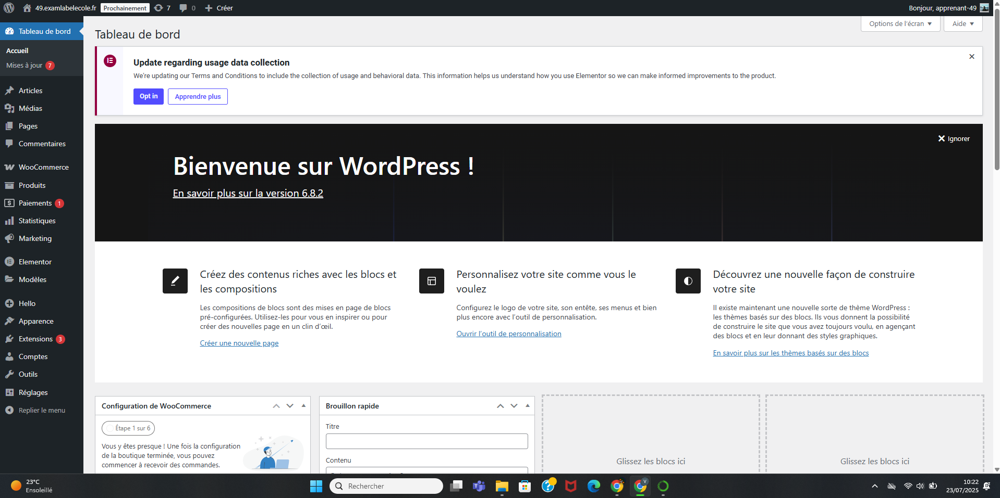
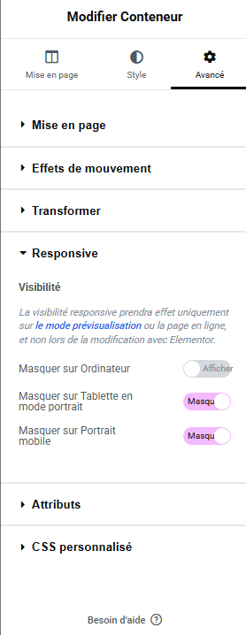

20 - WordPress#
🏄 Avant de Commencer#
Wordpress, la destination finale. celle qui nous achèvera tous et toutes
Informations
✍ - Vincent
🚧 - En cours
🔨 - 13/08/2025
🕑 - 20 - 30 min
Objectifs Pédagogiques
⭐ Objectif 1
⭐ ⭐ Objectif 2
⭐ ⭐ ⭐ Objectif 3
Note
Enumérer les différents objectifs pédagogiques (star classification avec difficulté taxonomie de bloom)
Sommaire
🌐 Internet
🕸️ World Wibe Web
💻 Site Web
🛒 E-Commerce
💑 Le Consommateur
Activité A
Activité A
Liens : 🎓 Dev-Web Adapter
Syllabus
Module 20: Développer et optimiser son site sous WordPress
Objectif global:
L’objectif global est que l’apprenant sache développer un site avec le CMS WordPress
Plan de cours:
I. Savoir choisir un nom de domaine :
Organisation mondiale du système de nommage
Règles d’enregistrements des noms de domaine par extension
Programme des nouvelles extensions internet
Stratégie de nommage internet
Acquisition de noms de domaine stratégiques détenus par des tiers
II. Découvrir WordPress et déployer un site rapidement :
Découvrir WordPress
Connaître le fonctionnement d’un site web
Installer WordPress en local
III. Prendre en main l’administration de votre site WordPress :
Connectez-vous au dashboard WordPress et créer un premier article
Paramétrer les options de votre site WordPress
Mettre en place une page d’accueil personnalisée et créer un menu de navigation
Personnalisez l’apparence du site grâce au customizer
IV. Personnaliser les contenus et le design d’un site WordPress :
Définir le design global du site
Prendre en main Elementor et designer une page d’accueil
Intégrer des fonctionnalités complémentaires grâce aux extensions
Intégrer des fonctionnalités avancées
V. Choisir, installer et configurer les composants WordPress adaptés au projet :
Définissez le type de site que vous souhaitez créer
Choisissez votre thème et votre page builder
Installez et configurez votre thème WordPress
Choisissez et installez les extensions WordPress pertinentes pour votre projet
VI. Finalisez et lancez votre site WordPress :
Optimiser le SEO et suivez le trafic d’un site
Optimiser les temps de chargement d’un site
Vérifications à faire avant de lancer un site
Connecter le nom de domaine et finaliser les configurations
Livrables:
Réaliser un site web ou e-commerce sous WordPress
Support de Cours
A venir
🧠 La Théorie#
Warning
Gros travail pédagogique à faire style les différents ingrédients et après en mode livre de recettes pour les différetes étapes. A chaque fois introduire les différentes étapes d’un tuto
Infos Pratiques#
Warning
Utiliser cette section pour présenter le site à Isaure
créer un tuto pour installer le plugin worpress (demande de Florian)
Objectifs#
Construire un site Wordpress avec Elementor et Woocomerce
Faire 4 - 5 pages bien (pas obligé de finir le site complet). L’objectif est :
Page d’acceuille
Fiche produit (faire a fond certains produits)
Tunnel d’acaht (modider les pages woocomerce par défaut avec elementor)
Wordpress#
C’est Quoi Wordpress ?#
Wordpress est un CMS (Content Management System, ou système de gestion de contenu en français), c’est à dire un logiciel qui permet de créer, gérer et modifier facilement le contenu d’un site web sans avoir à le coder (avec HTML, CSS, Javascript ou PHP). Avec un CMS, tu peux par exemple :
ajouter des pages ou des articles
insérer des images, vidéos, ou autres médias
organiser le contenu
gérer les utilisateurs et les permissions
Il propose une interface utilisateur simple (comme un tableau de bord) pour faire tout ça, souvent avec des outils visuels et des extensions pour ajouter des fonctionnalités.
👉 En résumé, un CMS te facilite la création et la gestion d’un site web sans coder.
Autres CMS#
Note
Introduire les autres CMS dans un dropdown
Joomla
Drupal
…
Prestashop Open Source !!
Autres CMS liste de e-commerce Nation
Pourquoi Wordpress ?#
Les Extensions#
Elementor
Woocomerce
Critère |
Elementor |
WooCommerce |
|---|---|---|
Type d’outil |
Constructeur de pages (Page Builder) |
Extension e-commerce (boutique en ligne) |
Fonction principale |
Créer et personnaliser l’apparence d’un site WordPress |
Vendre des produits/services en ligne |
Utilisation |
Design visuel par glisser-déposer (drag & drop) |
Gestion de produits, commandes, paiements |
Interface |
Éditeur visuel en temps réel (live editor) |
Tableau de bord WordPress (back-end) |
Personnalisation |
Très poussée pour la mise en page |
Basique par défaut, extensible avec des plugins |
Produits & vente |
Ne gère pas les ventes |
Gère le catalogue produits, le panier, les paiements |
Compatibilité |
Compatible avec WooCommerce (via widgets Woo) |
Peut être utilisé seul ou avec Elementor |
Version gratuite |
Oui (avec options limitées) |
Oui (fonctionnelle pour une boutique simple) |
Version payante (Pro) |
Elementor Pro : plus de widgets, Theme Builder, etc. |
Extensions payantes pour ajouter des fonctionnalités |
Fonctionnalités clés |
Templates, responsive design, Theme Builder, popup |
Produits variables, livraison, TVA, passerelle de paiement |
Cible principale |
Designers, créateurs de contenu, agences web |
Commerçants, e-commerçants, entrepreneurs |
Mettre le site en ligne#
Woocomerce - Réglages - visibilité du site - en ligne
ou
Elementor - Outils - mode maintenance - Désactivé
Théorie#
Serveur / Hosting
Nom de domaine#
OVH
Bonne pratiques#
Court (plus facile à taper)
Pas de jeux de mots
Utiliser des tirets pour clarifier
C’est quoi Wordpress ?#
CMS#
Content Management System
Interface#
Le back office
{kind=link}

Article#
Note
Dédié aux articles de blog - utilisation initiale de wordpress
Catégories : faire le lien avec le SEO
Etiquettes : Référencement
Médias#
Médiathèque : La ou on met nos images / photos / vidéos
Note
on inclut directement les images dans le constructeur et elles se mettent directement dans la médiathèque
Pages#
Warning
Toute les pages du site
Certaines pages sont créés par défaut (lister)
Commentaires#
Note
Modération des commentaires du site
Woocomerce#
Note
Apparait car le plugin Woocomerce est installé - créer une section plugin
On verra plus tard
Elementor#
Constructeur de thème
Note
Faire une analyse de elementor et lister les autres constructeurs de thème
Par défaut le constructeur de thème de Wordpress est Guttenberg
Apparence#
Utile pour la partie menu, le reste est fait via Elementor
Warning
Ne pas toucher Editeur de fichiers des thèmes
Peut casser le site
Extensions#
Note
Attention dans le choix des extensions :
Vérifier les avis et les dernières mise a jours
Plus on a de plugins, plus ca fait bugger le site - choisir avec précautions
Ne pas utiliser la fonction téléverser - Utiliser le catalogue officielle
Comptes#
Utile si on est plusieurs a travailler sur le site
Outils#
Utilse pour importer, exporter le contenue du site. On va pas le faire, pas besoin
Réglage#
Titre et slogan du site
Favicon (400 - 400 px)
Warning
Ne pas changer l’URL
Woocomerce#
Produits:
Note
Penser à réfléchir et rentrer les catégories
Données produits#
produits simples
produits variable (variation taille, couleurs, materiaux …)
Note
Faire captures des différentes catégories et faire un dropdown tab avec capture des différents éléments
Attributs : séparer par | ex : S | M | L
Responsive#
Note
On ne s’interesse pas au coté tablette
Le responsive est un élément très important à prendre en compte dans la création du site
Dans élémentor sélectionner l’icone mobile et modifier les paramètres de style
Note
ne pas créer de marges et tout en px, plutot utiliser des pourcentages qui permettent que l’affichage soit similaire entre le desktop et le mobile
Méthode simple#
Cacher les éléments et les refaire pour chaque
Pour cacher les éléments il faut aller dans avancé - responsive - cacher les éléments - Ensuite on créé un nouvel élément sur le mobile que l’on cachera sur ordi
{kind=link}

Capture d’écran illustrant les paramètres à sélectionner pour cacher les éléments#
Autre méthode#
Note
Prendre l’example d’un espaceur avec le paramètre ajustable (la petite icone)
Etapes#
Se poser les bonnes questions#
Quels éléments apparaissent sur toutes les pages :
Header
Footer
Les pages uniques vont être créés sur pages
Les éléments qui apparaissent plusieurs fois vont être créés sur Elementor, constructeur de thème
Plugins#
Tops Plugins#
Plugins Spécifiques#
LMS#
Note
Créer une dispo de cartes avec un dropdown en dessous pour des tests et comparatifs détaillés
LMS pour Learning Management System, donc des plugins qui permettent de gérer des contenus dédiés à l’apprentissage
Autres possibilités
IA#
Page acceuil#
supprimer le titre : Aller dans la roue et selectionner l’option ne pas afficher le titre
Implémenter votre charte graphique#
Polices personalisés#
Note
Insérer des liens vers des sites pour convertir les polices dans les différents formats
💪 Mise En Pratique#
Note
Quelles activités ?
check trello
📈 Pour Finir#
Conclusion#
Note
Conclusion plus fiche résumé (production collaborative ? Framanote ?) - produire un pdf exportable
Test#
Tes Connaissances#
Note
Créer un grand Storyline pour ajouter un questionnaire a chaque cours, enregistre la progression de l’apprenant et offre une collection de badge !!
Ton Projet#
Dossier Projet
Livrable 1
Présentation Canva
Livrable 1
Sources#
Liste des sources
Glossaire
Note
termes du glossaire
Liste Figures
Note
Référencer les figures de la page ?
Plus de Ressources#
Commentaires#
Note
Lien vers formulaire de feedback + possibilité de donner son avis dans les commentaires.